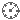
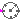

This package contains blocks that generate clock signals. For an introduction to clocks see UsersGuide.Clocks.
Extends from Modelica.Icons.SourcesPackage (Icon for packages containing sources).
| Name | Description |
|---|---|
|  PeriodicRealClock | Generates a periodic clock signal with a period defined by a Real number |
| PeriodicExactClock | Generates a periodic clock signal with a period defined by an Integer number with resolution |
|  EventClock | Generates a clock signal when the Boolean input changes from false to true |
This component generates a periodic clock that starts ticking when the simulation starts. The period is defined in seconds by a Real number. If clocks are synchronized relatively to each other then only one of the clocks can be defined with PeriodicRealClock.
For an introduction to clocks see UsersGuide.Clocks. If exact, integer based, time synchronization with absolute period definitions is desired, use block PeriodicExactClock to generate a periodic clock signal.
If a clock is associated to a clocked continuous-time partition, then an integrator has to be defined that is used to integrate the partition from the previous to the current clock tick. This is performed by setting parameter useSolver = true and defining the integration method as String with parameter solver. Both parameters are in tab Advanced. For an example, see Examples.Systems.ControlledMixingUnit.
Extends from Modelica_Synchronous.ClockSignals.Interfaces.PartialPeriodicClock (Icon, connector, and solver method of a block that generates a periodic clock).
| Name | Description |
|---|---|
| period | Period of clock (defined as Real number) [s] |
| Advanced | |
| useSolver | = true, if solverMethod shall be explicitely defined |
| solverMethod | Integration method used for discretized continuous-time partitions |
| Name | Description |
|---|---|
| y |
This component generates a periodic clock that starts ticking when the simulation starts. The period is defined as the product of a resolution, defined with enumeration Resolution, and Integer parameter factor. Internally, the period is represented as a rational number. All clocks with rational number definitions are exactly time synchronized to each other.
Example:
import M = Modelica_Synchronous;
M.Clocks.PeriodicExactClock periodicClock(factor=10,
resolution=M.Types.Resolution.ms);
// Clock ticks every 1/100 seconds
For an introduction to clocks see UsersGuide.Clocks.
If a clock is associated to a clocked continuous-time partition, then an integrator has to be defined that is used to integrate the partition from the previous to the current clock tick. This is performed by setting parameter useSolver = true and defining the integration method as String with parameter solver. Both parameters are in tab Advanced. For an example, see Examples.Systems.ControlledMixingUnit.
Extends from Modelica_Synchronous.ClockSignals.Interfaces.PartialPeriodicClock (Icon, connector, and solver method of a block that generates a periodic clock).
| Name | Description |
|---|---|
| factor | Sample factor with respect to resolution |
| resolution | Clock resolution |
| Advanced | |
| useSolver | = true, if solverMethod shall be explicitely defined |
| solverMethod | Integration method used for discretized continuous-time partitions |
| Name | Description |
|---|---|
| y |
This component generates a clock signal triggered by a continuous-time Boolean input signal u: Whenever the Boolean input signal u changes from false to true, then the output clock signal y ticks.
For an introduction to clocks see UsersGuide.Clocks.
If a clock is associated to a clocked continuous-time partition, then an integrator has to be defined that is used to integrate the partition from the previous to the current clock tick. This is performed by setting parameter useSolver = true and defining the integration method as String with parameter solver. Both parameters are in tab Advanced. For an example, see Examples.Systems.ControlledMixingUnit.
Extends from Modelica_Synchronous.ClockSignals.Interfaces.PartialClock (Icon, connector, and solver method of a block that generates a clock).
| Name | Description |
|---|---|
| Advanced | |
| useSolver | = true, if solverMethod shall be explicitely defined |
| solverMethod | Integration method used for discretized continuous-time partitions |
| Name | Description |
|---|---|
| y | |
| u |